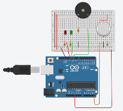
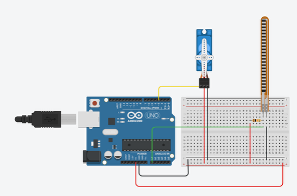
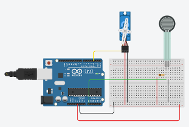
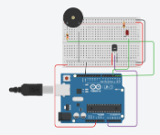

Arduino to Python Lab Conversion
This interactive guide converts Arduino C++ code to Python equivalents for various sensors and actuators. Each lab includes circuit diagrams, original Arduino code, and Python implementations using libraries like RPi.GPIO and gpiozero for Raspberry Pi.
Gas Sensor
Smoke detection with LED and buzzer alerts
Flex Sensor
Servo control based on flex sensor input
Pressure Sensor
Force-sensitive servo positioning
Temperature Sensor
Temperature monitoring with alerts
Servo Actuator
Micro:bit servo control with gestures
🌫️ Gas Sensor Lab
Smoke/Gas Detection System with Visual and Audio Alerts

Gas Sensor Circuit Configuration
Key Differences in Python Implementation:
- GPIO Library: Uses RPi.GPIO for pin control instead of Arduino's digitalWrite
- Analog Input: Requires MCP3008 ADC chip since Raspberry Pi lacks built-in ADC
- Sound Generation: Uses pygame library to generate tones instead of Arduino's tone() function
- Normalized Values: Sensor readings are normalized (0.0-1.0) rather than raw ADC values
- Exception Handling: Includes proper cleanup for GPIO pins and resources
🔧 Flex Sensor Lab
Servo Motor Control Based on Flex Sensor Input

Flex Sensor with Servo Motor Configuration
Python Implementation Notes:
- Servo Control: gpiozero.Servo provides easy servo control with values from -1 to 1
- Value Mapping: Custom map_value() function replaces Arduino's map() function
- PWM Alternative: Includes RPi.GPIO PWM example for direct hardware control
- Sensor Calibration: Uses normalized sensor readings with configurable min/max values
- Smooth Operation: Maintains 20ms timing for smooth servo movement
⚡ Pressure Force Sensor Lab
Force-Sensitive Servo Motor Positioning System

Pressure Force Sensor with Servo Motor
Enhanced Python Features:
- Signal Smoothing: Implements moving average filter to reduce sensor noise
- Visual Feedback: ASCII bar graph shows force level in real-time
- Threshold Control: Alternative implementation with discrete force levels
- Calibration: Configurable force thresholds for different sensors
- Error Handling: Robust constrain function prevents servo damage
🌡️ Temperature Sensor Lab
Temperature Monitoring with LED and Buzzer Alerts

Temperature Sensor with Alert System